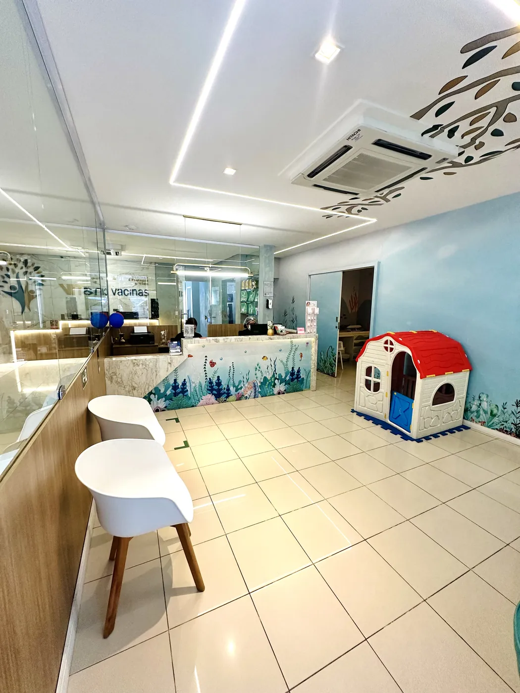
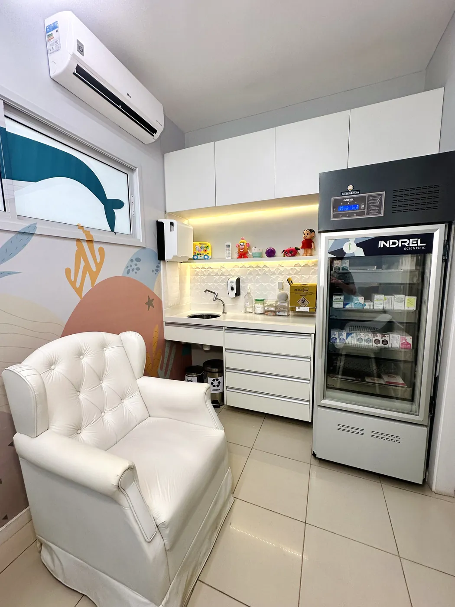
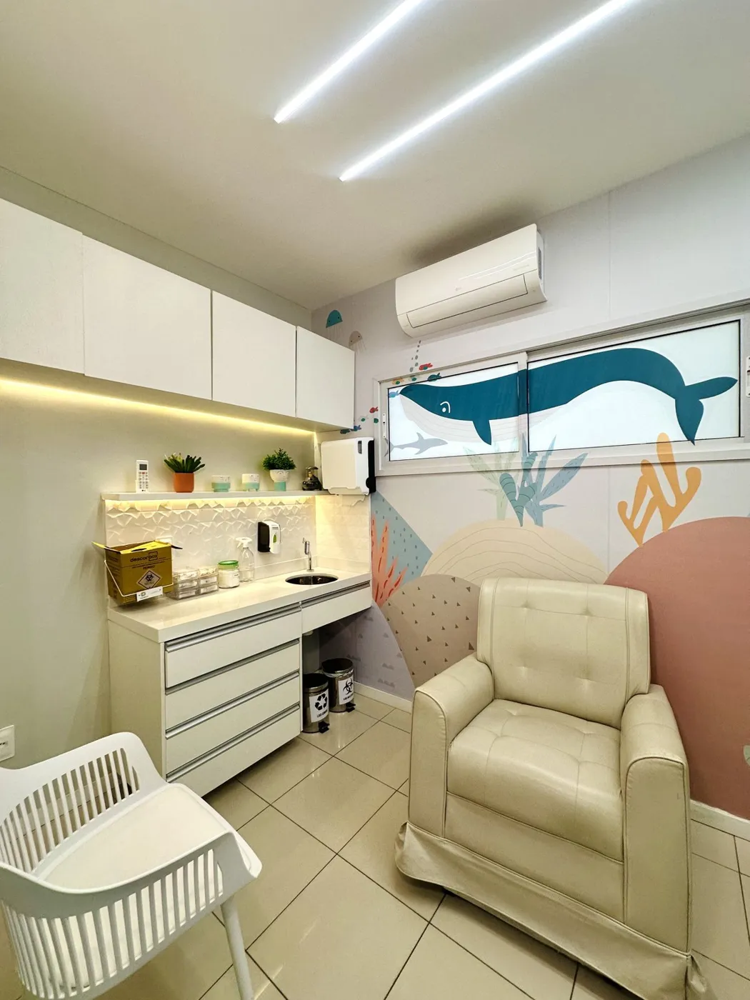

Ciclo 1 de 3
Ciclo Semear
2 a 9 meses
O começo de tudo: as vacinas dos primeiros meses de vida, dos 2 aos 9 meses.
- 7 visitas
- 16 vacinas
- Aos 2 meses
- Aos 3 meses
- Aos 4 meses
- Aos 5 meses
- Aos 6 meses
- Aos 7 meses
- Aos 9 meses
Dos 2 aos 18 meses, as vacinas do seu bebê em um só plano: doses reservadas no nosso estoque, preço mantido e a equipe acompanhando cada etapa.
Cada ciclo reúne as vacinas de uma faixa de idade. Veja, idade por idade, o que cada um traz. Toque na vacina para saber mais sobre ela.
2 a 9 meses
O começo de tudo: as vacinas dos primeiros meses de vida, dos 2 aos 9 meses.
12 a 18 meses
Depois do primeiro aniversário: as vacinas e os reforços dos 12 aos 18 meses.
2 a 18 meses
O calendário inteiro em um único plano: as vacinas dos 2 aos 18 meses, do Semear ao Cultivar.
A equipe confere a caderneta e ajusta o ciclo às doses que o bebê já tomou. A indicação de cada vacina é confirmada pela nossa enfermagem.
A criança chega pela recepção infantil e é vacinada numa sala só para ela, com a nossa enfermagem.

O espaço infantil tem tema do fundo do mar, nas paredes e no balcão, para a criança chegar tranquila e se distrair enquanto espera.


Antes da dose, a equipe confere a caderneta e tira as dúvidas. Depois, explica as reações esperadas e quando volta a próxima dose.
A enfermagem da VMais vai até a sua casa com as doses na caixa térmica, entre +2 °C e +8 °C, e aplica com o mesmo cuidado da clínica.
Mande a idade do bebê ou uma foto da caderneta. A equipe mostra o ciclo que encaixa, com valores e condições de pagamento.